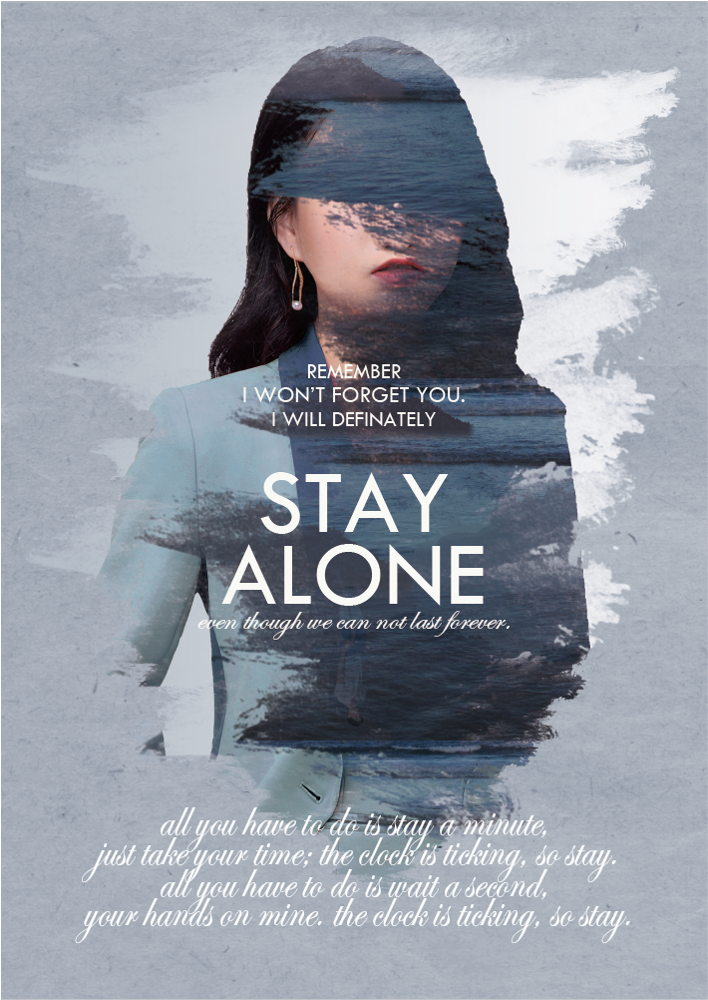
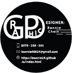
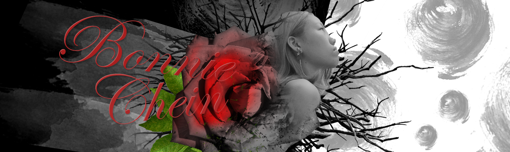
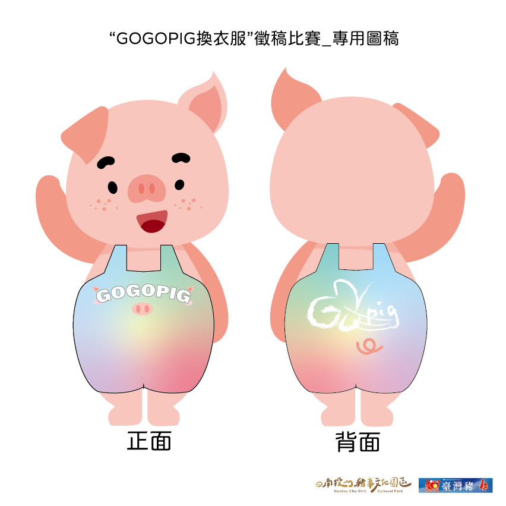

首頁
自我介紹
平面設計
UI設計
字體設計
繪畫作品
平面設計:

<黯藍孤獨>
黯淡的藍色，是孤單的色彩，也是大海的顏色。人心深似海，不論過了多久，內心深處總有一個無可替代的人。
有些時候為了等待那個人，我們寧願孤獨。或許平常在忙碌的生活裡會遺忘，但潛意識中，他仍存在，在腦海深處，歷歷在目。
< My Own Business Card Design>
以無彩色色調凸顯專業感。和一般常見名片不同，使用圓形為基底，強調溝通容易。
將職業名稱以連結方式設計，傳達給客戶，會以圓滑方式，在客戶的要求與自己的風格中找到平衡。


<絕處逢生>
荒蕪的原野，艷麗的玫瑰仍在這殘酷的環境下堅持生長。人生中總有許多事物使我們煩心，那些事物就如同圖中玫瑰背後的尖刺，阻止我們向前。但我們在殘酷的環境下也必須堅持勇往直前。

<豬色繽紛>
“GOGOPIG換衣服”徵稿比賽作品。利用可愛色系暈染，和南投豬事文化園區一樣，利用多彩多姿的色彩使大家想到屠宰業並非只有肉色，而是更加繽紛快樂的。